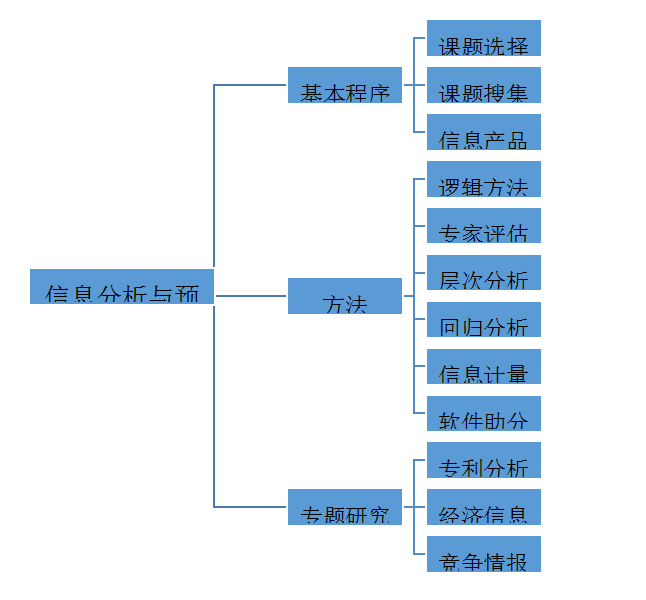

《信息分析与预测》是管理学门类之下信息管理与信息系统专业的一门核心课程。信息分析与预测是对已知信息的内容进行整序和科学抽象为主要特征的一项信息深加工活动，目的是为了获取增值了的、具有决策支持作用的信息分析与预测产品，以便更好地开发和利用信息资源。随着信息社会的不断发展，信息分析的社会功能日益增强，已成为促进各产业发展的关键因素和重要战略资源。信息分析与预测是在信息服务产业飞速发展的背景下，于20世纪50年代由情报科学派生出来的一门新兴学科，随着“互联网+”行业发展趋势和大数据技术的快速发展，信息分析与预测对各行业持续、健康、稳定发展的意义将与日俱增。该课程兼具强实用性和高行业普适性的特点。
课程共包括13章内容。第一章是概论。包括信息分析与预测的概念、特点、功能和作用以及在医学领域中的具体应用；信息分析产生和发展的背景，以及信息分析发展的总体趋势，信息分析人员应具备的基本素质。第二章课题选择。内容包括信息分析与预测选题的原则；信息分析与预测课题的来源；信息分析与预测选题的意义。第三章，信息搜集。包括信息源的概念、种类和特点；信息搜集的途径和信息搜集的原则；文献调查和社会调查的主要方法。第四章，常用逻辑方法。包括信息分析与预测方法的来源和体系结构；掌握常用的逻辑方法，比较、分析与综合。第五章，专家评估法。包括德尔菲法的由来、具体用途，适用课题类型等，方法的特点、实施和问卷设计。第六章，层次分析法。包括层次分析法的基本原理和层次分析法的计算方法。第七章，回归分析法。包括回归分析法的思想和原理，构造判断矩阵和计算方法。第八章，信息计量学方法。包括信息计量学的产生背景和信息计量学的发展趋势，四种信息计量学的原理及其实际应用。第九章，计算机辅助分析介绍计算机辅助文献信息计量分析方法与工具。讲解运用SPSS进行方差分析、回归分析和聚类分析。第十章，专利技术信息分析与预测。包括专利制度的发展，掌握专利的概念，专利文献的概念、类型，专利信息分析的主要内容。第十一章，经济信息分析与预测。包括市场信息的概念，作用及原理；顾客满意度调查与预测的程序和基本方法。 第十二章，竞争情报分析与预测。
包括竞争情报分析与预测的产生和发展，熟悉竞争对手情报的获取方法，掌握两种常用的竞争情报分析与预测的方法。第十三章，信息的组织、评价与产品制作。包括信息组织的原则和基本方法，信息价值评价的三个维度和具体指标；综述的定义与基本特征，综述报告的结构和一般形式。
课程内容结构共包括三大部分，分别为：信息分析与预测程序，信息分析与预测方法和信息分析与预测专题研究。其中第一部分是基础，第二部分是全课程的重点，第三部分是具体的应用，是课程的落脚点。具体结构如图所示：
本课程共13章，教学大纲安排45学时（理论33学时、实践12学时） 具体学时分配如下图所示：
| 内容 | 总课时 | 理论学时 | 实习（见习）时数 | 备注 |
|---|---|---|---|---|
| 概论 | 3 | 3 | 0 | |
| 课题选择 | 2 | 2 | 0 | |
| 信息搜集的途径 | 7 | 1 | 6 | |
| 常用逻辑方法 | 3 | 3 | 0 | |
| 专家评估法 | 3 | 3 | 0 | |
| 层次分析法 | 3 | 3 | 0 | |
| 回归分析法 | 3 | 3 | 0 | |
| 信息计量学方法 | 3 | 3 | 0 | |
| 计算机辅助分析方法 | 3 | 0 | 3 | |
| 专利技术信息分析与预测 | 3 | 3 | 0 | |
| 经济信息分析与预测 | 3 | 3 | 0 | |
| 竞争情报分析与预测 | 3 | 3 | 0 | |
| 经济信息分析与预测 | 3 | 3 | 0 | |
| 信息组织、评价与产品制作 | 6 | 3 | 3 | |
| 小计 | 45 | 33 | 12 |
爱因斯坦说过：“兴趣和爱好是最好的老师。”学习兴趣是学生是学习活动的最佳动力。要调动学生的学习兴趣，教学方式方法应灵活多样。在正确理解和把握课程教学目标，深刻研习教材的基础上，根据学生实际和学科内容需要灵活运用多种教学方式。主要有以下几点实践： 1 pbl教学法的应用。“以问题为基础”的教学模式(pbl)是以问题作为激发学生学习的动力，以问题为基础，以学生为中心的一种教学方法。教师根据内容结构提出有启发性的思考题，让学生带着问题预习，按照问题指定的内容进行预习和查找资料，把巧设问题情景、解决疑难问题作为课堂教学的重点。将pbl教学方法应用于《信息分析与预测》课程的教学，可使学生对所学知识易记忆、记牢，提高理论考核的优良率。
例如，在讲授“信息价值评价”时，先提问一个问题“同学们认为什么样的信息是有价值的?”学生们回答了真实、可靠等等。随后，教师举了相应实例。又提问“如何得知搜集到的信息是否真实、可靠?“引出了信息的外部特征、内容特征、实践效果等评价信息价值的主要维度，同时文献信息、口头信息、实物信息的评价又各有其特点。这样由问题导出所要学习的主题，提出所要达到的教学目标，使学生明确探索方向，进入乐学状态。
2 交互式教学。通过课堂进行知识传授仍是目前《信息分析》课程教学的主要途径。交互式教学通过多种形式加强学生在课堂中的参与，引导学生在教学过程中积极思考议题，使他们真正成为课程学习的主体。
师生探讨是经常采用的方式之一。要求教师和学生对课程知识了解并深入交流。例如，在“课题计划”的教学中，提出“课题计划应该包括哪些内容?”学生一一进行了回答。有些同学的回答，还会引发其他参与讨论。通过课堂上教师和学生对所学专业知识的质疑，让学生开动脑筋思考这些问题，同时提出自己的独到见解和看法，并一起讨论。这样，不仅可以使学生加深对问题的认识，而且还能促使学生去认真看书，查阅相关文献。
小组合作的方式也很常用。教学实践中，采用的是“以任务为中心”的组织方式，教师制定小组运作规则，在学生需要时进行指导。例如，“问卷调查法”的教学，教师以自选题需要问卷调查的学生为核心组织学习小组。既有助于学生选题的完成，也利于学生协调能力和操作能力的培养。
习题与测验也是一种较常见的交互式教学。在教学过程中，每讲完一个完整的内容时，教师会在幻灯片上打出一些简单的判断题，请学生来判断，或是对重点内容进行小测验。这种方式可对学生所学知识及时进行巩固，对于理论教学尤其有效。
3 案例分析教学。案例分析是《信息分析》教学行之有效的一种方法。指的是根据教学对象的需要，把实践中的真实情景加以典型化处理，形成供学生思考分析和决断的案例，并通过独立研究和相互讨论的方式来提高学生分析问题和解决问题能力的一种教学方法。
“信息分析与预测产品制作”的教学中，每一类产品制作都带有许多的案例。有消息类的，数据类的，还有研究报告的制作。消息类的案例，主要采用个人练习式;数据类的案例，采用项目小组式;研究报告的制作，首先班级集体分析典型事例，而后根据学生选题类型进行个人练习或小组合作。原本枯燥的理论在案例分析过程中鲜活起来并不知不觉得到运用。很多学生反映这种教学方法使他们收益很大。
4 翻转式教学 在定量分析方法的课程讲授中应用翻转式教学，在课堂教学实施之前将信息分析方法的教学视频发给学生，让学生在课前完成知识的学习，课堂教学主要针对学生提出的问题进行内容组织与教学实施，帮助学生解除疑惑并进行知识运用。教学实践表明在定量分析方法中翻转式教学较传统教学方式教学效果更好。